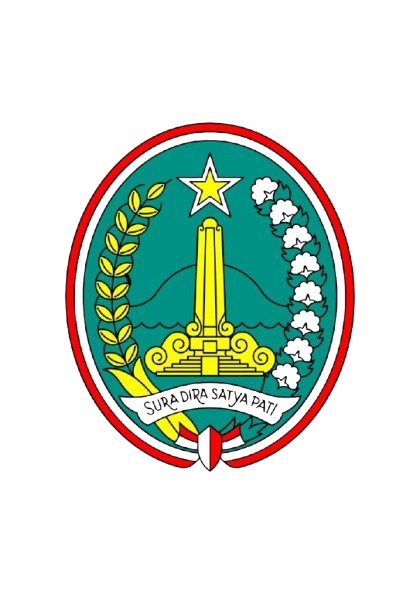

INTEGRITAS &
PENCEGAHAN KORUPSI
Membangun Birokrasi Bersih dari Awal.

Mengapa Pentingnya Integritas & Pencegahan Korupsi bagi ASN (PPPK)
PPPK adalah bagian dari ASN
Sebagai bagian integral dari Aparatur Sipil Negara, PPPK mengemban amanah pelayanan publik yang profesional, bersih, dan berwibawa.
ASN wajib berintegritas dan bebas korupsi
Nilai integritas merupakan standar perilaku fundamental yang mengikat setiap aparatur pemerintah tanpa pengecualian.
Orientasi ini: membangun karakter sejak awal masa kerja
Pembekalan ini diselenggarakan untuk menanamkan nilai-nilai integritas dan antikorupsi sedini mungkin dalam masa pengabdian.
Apa Itu Korupsi
Definisi Korupsi
"Korupsi tidak hanya dipahami sebagai tindakan “merugikan uang negara”, melainkan mencakup berbagai bentuk penyalahgunaan kewenangan yang diatur secara rinci dalam kerangka hukum nasional."
Dampak & Jenis Korupsi yang Paling Rentan
Dampak Korupsi
- Kerugian finansial negara
- Pelayanan publik buruk
- Ketidakadilan sosial
Jenis Korupsi yang Paling Rentan
- Suap-menyuap
- Pemerasan
- Perbuatan curang (mark up, proyek fiktif)
- Benturan kepentingan
- Gratifikasi ilegal
Contoh Kasus
Markup
Atasan minta harga kursi Rp2 juta (harga pasar Rp1 juta), sisanya untuk operasional kantor.
Gratifikasi
Pengusaha memberi parsel Lebaran karena Anda mempercepat izinnya.
Pungli
Warga memberi uang rokok Rp50.000 agar KTP-nya cepat keluar.
Sanksi bagi ASN yang Terbukti Korupsi
KORUPSI = HUKUMAN BERAT
Strategi Pemberantasan Korupsi KPK
PENDIDIKAN
“Don't want to corrupt”
BY EDUCATION (MEMBANGUN NILAI)
PENCEGAHAN
“Can't corrupt”
BY PREVENTION (PERBAIKAN SISTEM)
PENINDAKAN
“Dare not corrupt”
BY ENFORCEMENT (EFEK JERA)
+ PERAN SERTA MASYARAKAT
Sinergi dan partisipasi aktif publik bersama ASN dalam pengawasan, keterbukaan informasi, dan pelaporan korupsi.
Mulai dari Diri Sendiri
PENCEGAHAN KORUPSI DIMULAI DARI DIRI SENDIRI
Integritas sejati tidak ditentukan saat diawasi, melainkan pada keteguhan hati memilih kejujuran ketika tidak ada yang melihat.
4 Pilar Penyuluhan Anti Korupsi
Nilai Keyakinan Agama
Bagaimana seseorang bisa memahami tentang nilai - nilai keyakinan dalam agama masing - masing.
Aksi Nyata Kebijakan
Apa yang bisa kita lakukan, baik menurut agama kita ?
Membangun Rasa Malu
Hal tersebut bisa membentuk jiwa seseorang untuk malu melakukan korupsi.
Karakter Berintegritas
Akan membentuk jiwa seseorang berintegritas karena apa yang kita lakukan harus kita pertanggung jawabkan secara aturan maupun secara agama.
Refleksi Integritas

“Orang Berbuat Baik” jadi: Orang Aneh
Fenomena sosial ketika kejujuran dan kepatuhan aturan justru dianggap ganjil oleh lingkungan yang permisif terhadap korupsi.
Sebagai ASN PPPK, kita harus berani menjadi teladan dan membiasakan yang benar, bukan membenarkan yang biasa.
Penyuluhan Anti Korupsi Saling Mengingatkan
Penyuluhan Anti Korupsi
Niatkan: "dari diri sendiri"
Integritas diawali dari kebersihan niat dan tekad kuat dalam diri untuk tidak mengambil hak orang lain.
Mulai sekarang
Tidak menunda komitmen berintegritas; setiap tugas kedinasan hari ini harus bebas dari praktik koruptif.
Mulai Lakukan
Realisasikan dalam tindakan nyata, keteladanan pelayanan publik, serta berani saling mengingatkan rekan sejawat.
9 Nilai Integritas KPK (Bersepeda Jumat KK)
Mnemonik Hafalan: BER-SE-PE-DI-A JU-MA-T K-K
Prinsip Integritas & Makna Sukses
Semua yang kita lakukan harus "JUJUR"
Kejujuran adalah modal dasar kepercayaan publik. Tanpa kejujuran, pelayanan publik kehilangan martabatnya.
HAKIKAT KESUKSESAN SEJATI
"SUKSES: Bisa tidur nyenyak dan bangun tidur tetap semangat"
Bebas dari rasa cemas, bebas dari jeratan hukum, dan hidup tenang dalam keberkahan pengabdian kepada bangsa dan negara.
Jaringan Pencegahan Korupsi (JAGA.ID)
Platform diseminasi program pencegahan korupsi dan peningkatan partisipasi masyarakat dalam mengawasi pelayanan publik melalui transparansi data dan kanal penyampaian keluhan terkait pelayanan publik.
TERIMA KASIH
“Bersama Membangun Karakter ASN Berintegritas, Profesional, dan Bebas Korupsi”